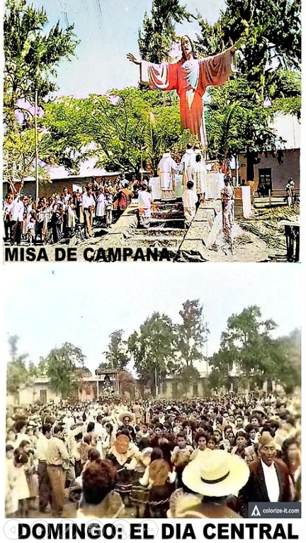

"Cualquiera que lo mire hallará la paz, en el dulzor de su mirada, en su simetría y en su reposo."
Descripción
El símbolo más icónico de Chiclín
Con siete metros de altura y cuatro metros de ancho en sus brazos extendidos, el Cristo Rey domina la Plaza Mayor de Chiclín en señal de paz y bienvenida. No existen precedentes de una escultura igual o mayor en toda la región La Libertad. También se le conoce como el "Cristo de la Paz".
Reposa sobre una plataforma de piedras con graderías frontales y pertenece a la etapa republicana del patrimonio de Chiclín. Fue edificado por el artista ancashino Filomeno Melgarejo en 1943, utilizando el sistema de vaciado de concreto armado sobre un armazón metálico.

Historia
Realización e Historia
Realización
Características
Significado de los Brazos Abiertos
Contexto histórico
El origen de su construcción
La Fiesta del Señor de la Caña, desde 1932, es un acontecimiento de fe legado por la familia Larco para su colectividad, como complemento de sus labores agrícolas. Es un culto con antecedentes coloniales, cuya data se extiende hasta fines del siglo XIX. A lo largo del tiempo tomó contornos multitudinarios y se convirtió en una de las mayores concentraciones costumbristas, folclóricas, de música y danza en la costa peruana.
Siendo el aspecto religioso una de sus mayores motivaciones, se comprobó que la pequeña iglesia del pueblo no podía albergar a los miles de fieles que cada año asistían a su celebración. Fue entonces que la familia Larco decidió construir una colosal efigie de Cristo Rey, con la finalidad de celebrar una Misa de Campaña al aire libre, para que los asistentes pudiesen converger en un rito popular a los pies del monumento.
Fue tanto el fervor que despertó que la Hermandad del Señor de la Caña, en su programa de celebración, incluía el día sábado central como noche de adoración, antes de la procesión; y así se dispuso por años.

Fotografía Histórica
Chiclín, 1957

"La foto nos permite volver a vivir nuestra niñez escolar. Fué la etapa más linda de nuestras vidas el pasar por las aulas del Kindergarten, por la Fanning, por la Aguirre, la Fajardo — escuelitas que forjaron nuestro carácter, con maestros forjadores de espíritus."
Inolvidables fueron las reuniones cívicas de todo el alumnado en la Plaza Mayor del Cristo Rey.
Patronato de Cultura de Chiclín · Archivo Palma Alfaro · Texto: Daniel Terrones
Galería
Fotografías


Palabras del historiador
Un testimonio de fe y patrimonio
"Cualquiera que lo mire hallará la paz, en el dulzor de su mirada, en su simetría y en su reposo."

Daniel Terrones Valverde · "Semblanzas históricas de Chiclín", 2009

Daniel Terrones Valverde
Historiador de Chiclín
Fuente: "Semblanzas históricas de Chiclín", 2009 · Archivo fotográfico Larco.